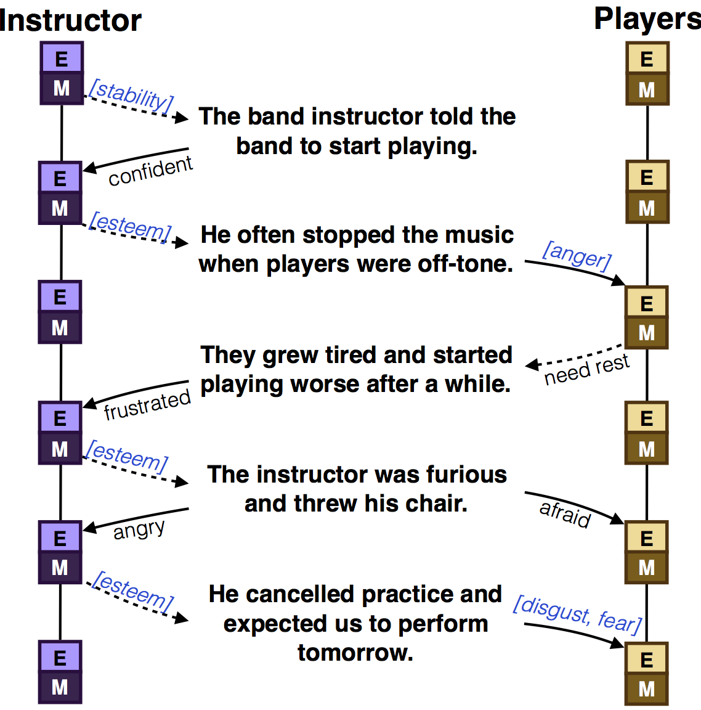
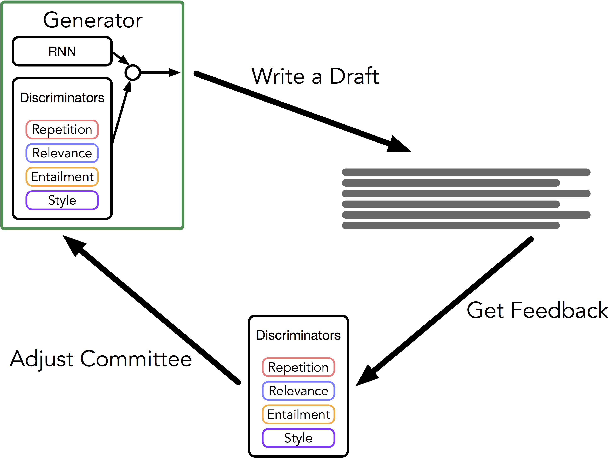
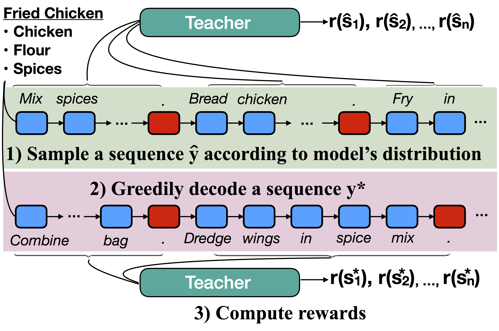
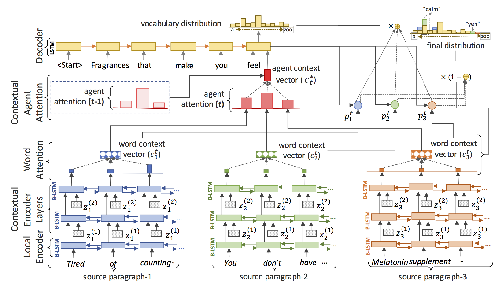
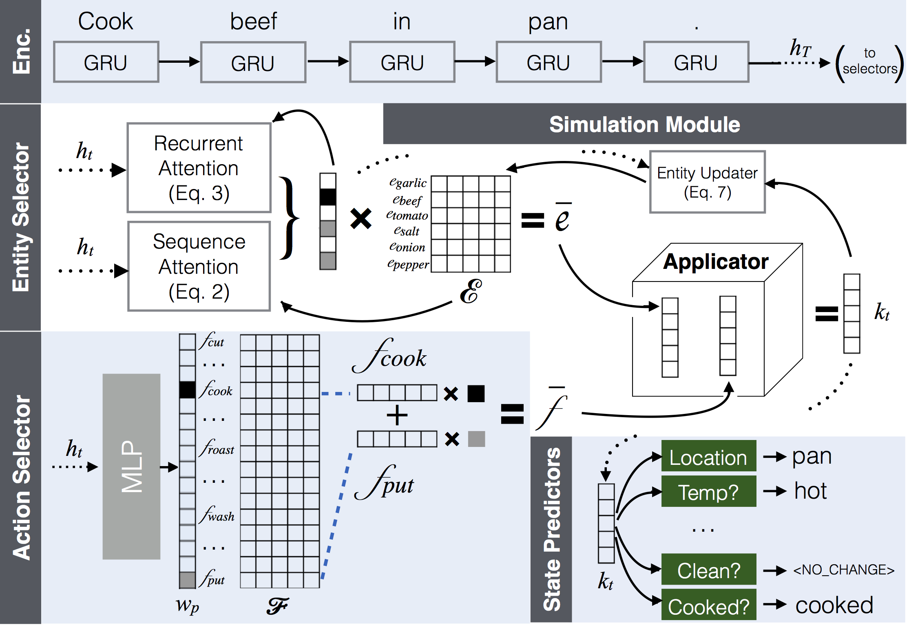
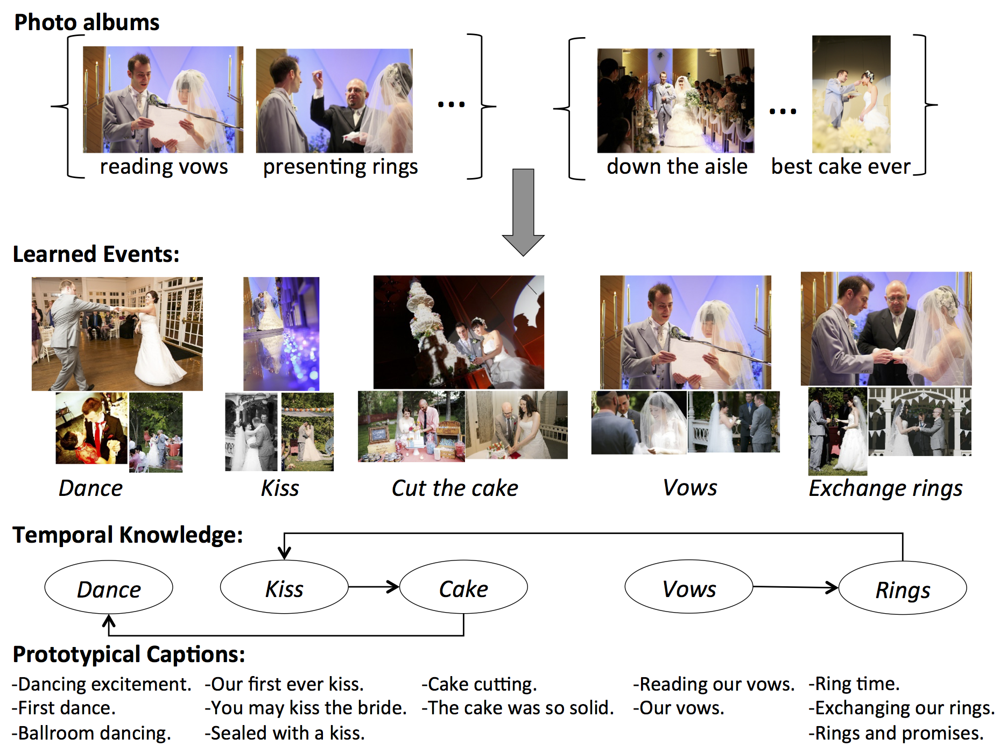

Antoine Bosselut
University of Washington PhD StudentOffice: 390 Paul Allen Center
antoineb [at] cs [dot] washington [dot] edu
I am a fifth year PhD student at the University of Washington working in the Natural Language Processing Group and the Machine Learning Group. I am advised by Professor Yejin Choi. My research centers on using deep learning to simulate common sense reasoning and using the resulting representations for generation and dialogue.
I am also a part-time researcher on Project Common Sense at the Allen Institute for Artificial Intelligence, and on the Deep Learning team at Microsoft Research Redmond where I work with Asli Celikyilmaz.
Updates
- Jul 2018 - Heading to ACL 2018!
- Jun 2018 - Kicking off second internship @ MSR with Asli Celikyilmaz
- Jun 2018 - Presented two posters at NAACL 2018
- May 2018 - Presented poster at ICLR 2018
- May 2018 - Talk at NW-NLP 2018
- Apr 2018 - Joined AI2 to work on common sense!
- Apr 2018 - Two papers accepted at ACL 2018
- Feb 2018 - Two papers accepted at NAACL 2018
- Jan 2018 - One paper accepted to ICLR 2018
- Dec 2017 - Won an AI2 Key Scientific Challenges Award
- Nov 2017 - Talk at UW CSE Affiliate's Day
- Jul 2017 - Attended NLU Workshop @ Google
- Jun 2017 - Starting internship at MSR Redmond with Asli Celikyilmaz and Xiaodong He
- Jun 2017 - Talk at Allen Institute for Artificial Intelligence
Publications and Posters

Modeling Naive Psychology of Characters in Simple Commonsense Stories
Hannah Rashkin, Antoine Bosselut, Maarten Sap, Kevin Knight, and Yejin Choi.
In Proceedings of the 56th Annual Meeting of the Association for Computational Linguistics (ACL), 2018.
Abstract Paper Code Project Page
Understanding a narrative requires reading between the lines and reasoning about the unspoken but obvious implications about events and people's mental states - a capability that is trivial for humans but remarkably hard for machines. To facilitate research addressing this challenge, we introduce a new annotation framework to explain naive psychology of story characters as fully-specified chains of mental states with respect to motivations and emotional reactions. Our work presents a new large-scale dataset with rich low-level annotations and establishes baseline performance on several new tasks, suggesting avenues for future research.

Learning to Write with Cooperative Discriminators
Ari Holtzman, Jan Buys, Maxwell Forbes, Antoine Bosselut, David Golub and Yejin Choi
In Proceedings of the 56th Annual Meeting of the Association for Computational Linguistics (ACL), 2018.
Abstract Paper Code Examples
Recurrent Neural Networks (RNNs) are powerful autoregressive sequence models, but when used to generate natural language their output tends to be overly generic, repetitive, and self-contradictory. We postulate that the objective function optimized by RNN language models, which amounts to the overall perplexity of a text, is not expressive enough to capture the notion of communicative goals described by linguistic principles such as Grice's Maxims. We propose learning a mixture of multiple discriminative models that can be used to complement the RNN generator and guide the decoding process. Human evaluation demonstrates that text generated by our system is preferred over that of baselines by a large margin and significantly enhances the overall coherence, style, and information content of the generated text.

Discourse-Aware Neural Rewards for Coherent Text Generation
Antoine Bosselut, Asli Celikyilmaz, Xiaodong He, Jianfeng Gao, Po-sen Huang, and Yejin Choi.
In Proceedings of the 16th Annual Conference of the North American Chapter of the Association for Computational Linguistics (NAACL), 2018.
Abstract Paper
In this paper, we investigate the use of discourse-aware rewards with reinforcement learning to guide a model to generate long, coherent text. We learn neural rewards to model cross-sentence ordering as a means to approximate discourse structure. Empirical results demonstrate that a generator trained with the learned reward produces more coherent and less repetitive text than models trained with cross-entropy or with reinforcement learning with commonly used scores as rewards.

Deep Communicating Agents for Abstractive Summarization
Asli Celikyilmaz, Antoine Bosselut, Xiaodong He, and Yejin Choi.
In Proceedings of the 16th Annual Conference of the North American Chapter of the Association for Computational Linguistics (NAACL), 2018.
Abstract Paper Project Page
We present deep communicating agents in an encoder-decoder architecture to address the challenges of representing a long document for abstractive summarization. With deep communicating agents, the task of encoding a long text is divided across multiple collaborating agents, each in charge of a subsection of the input text. These encoders are connected to a single decoder, trained end-to-end using RL to generate a focused and coherent summary. Empirical results demonstrate that multiple communicating encoders lead to a higher quality summary.

Simulating Action Dynamics with Neural Process Networks
Antoine Bosselut, Omer Levy, Ari Holtzman, Corin Ennis, Dieter Fox, and Yejin Choi.
In Proceedings of the 6th International Conference on Learning Representations (ICLR), 2018.
Abstract Paper Podcast Data
Understanding procedural language requires anticipating the causal effects of actions, even when they are not explicitly stated. In this work, we introduce Neural Process Networks to understand procedural text through (neural) simulation of action dynamics. Our model complements existing memory architectures with dynamic entity tracking by explicitly modeling actions as state transformers. The model updates the states of the entities by executing learned action operators. Empirical results demonstrate that our model can reason about the unstated causal effects of actions, allowing it to provide more accurate contextual information for understanding and generating procedural text, all while offering interpretable internal representations.

Learning Prototypical Event Structure from Photo Albums
Antoine Bosselut, Jianfu Chen, David Warren, Hannaneh Hajishirzi, and Yejin Choi.
In Proceedings of the 54th Annual Meeting of the Association for Computational Linguistics (ACL), 2016.
Abstract Paper Project Page Data
Activities and events in our lives are structural, be it a vacation, a camping trip, or a wedding. While individual details vary, there are characteristic patterns that are specific to each of these scenarios. For example, a wedding typically consists of a sequence of events such as walking down the aisle, exchanging vows, and dancing. In this paper, we present a data-driven approach to learning event knowledge from a large collection of photo albums. We formulate the task as constrained optimization to induce the prototypical temporal structure of an event, integrating both visual and textual cues. Comprehensive evaluation demonstrates that it is possible to learn multimodal knowledge of event structure from noisy web content.
Contact
Antoine Bosselut
Paul G. Allen School of Computer Science and Engineering
University of Washington
Box 352350
Seattle, WA 98195-2350
Paul G. Allen School of Computer Science and Engineering
University of Washington
Box 352350
Seattle, WA 98195-2350